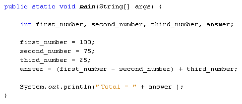
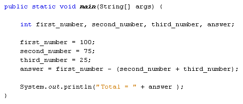

Operator Precedence
You can, of course, calculate using more than two numbers in Java. But you need to take care of what exactly is being calculated. Take the following as an example:
first_number = 100;
second_number = 75;
third_number = 25;
answer = first_number - second_number + third_number;
If you did the calculation left to right it would be 100 - 75, which is 25. Then add the third number, which is 25. The total would be 50. However, what if you didn't mean that? What if you wanted to add the second and third numbers together, and then deduct the total from the first number? So 75 + 25, which is 100. Then deduct that from the first number, which is 100. The total would now be 0.
To ensure that Java is doing what you want, you can use round brackets. So the first calculation would be:
answer = (first_number - second_number) + third_number;
Here's the coding window so that you can try it out:

The second calculation is this:
answer = first_number - (second_number + third_number);
And here's the code window:

Now let's try some multiplication and addition.
Change your math symbols (called Operators) to plus and multiply:
answer = first_number + second_number * third_number;
Delete all your round brackets, and then run your programme.
With no brackets, you'd think Java would calculate from left to right. So you'd think it would add the first number to the second number to get 175. Then you'd think it would multiply by the third number, which is 25. So the answer would be 4375. Run the programme, though. The answer that you actually get is 1975! So what's going on?
The reason Java got the "wrong" answer was because of Operator Precedence. Java treats some mathematical symbols as more important than others. It sees multiplication as having a priority over addition, so it does this first. It then does the addition. So Java is doing this:
answer = first_number + (second_number * third_number);
With the round brackets in place, you can see that second number is being multiplied by third number. The total is then added to the first number. So 75 multiplied by 25 is 1875. Add 100 and you get 1975.
If you want it the other way round, don't forget to "tell" Java by using round brackets:
answer = (first_number + second_number) * third_number;
Division is similar to multiplication: Java does the dividing first, then the addition or subtraction. Change your answer line to the following:
answer = first_number + second_number / third_number;
The answer you get is 103. Now add some round brackets:
answer = (first_number + second_number) / third_number;
The answer this time will be 7. So without the round brackets, Java does the dividing first, and then adds 100 to the total - it doesn't work from left to right.
Here's a list on Operator Precedence
- Multiply and Divide - Treated equally, but have priority over Addition and Subtraction
- Add and Subtract - Treated equally but have a lower priority than multiplication and division
So if you think Java is giving you the wrong answer, remember that Operator Precedence is important, and add some round brackets.
In the next part, we'll take a look at how to store text values using Java.